Through this task, I would like to classify 5 different sign boards used for warnings on road across
Victoria. The classes which are being considered for this analysis are “School zone”,
“Pedestrian crossing”, “No Entry”, “No stopping”,
- Model might get confused with the similar colored road signs
- Different angles and lighting conditions might prove to be a challenge while classification
Some of the practical challenges include,
- There is no open dataset that has the required images for classification
- Collecting dataset manually might be hard
- If we manage to collect a large dataset, training might require a lot of computational resources
The input to the model will be a pre-processed image. The output should be the class to which it belongs to. The target classes are:
- School zone
- Pedestrian crossing
- No Entry
- No stopping
- No left or right turn
The series of tasks carried out as part of this project are
- Dataset collection from various sources across web
- Development of a simple CNN and testing it against validation set
- Create new dataset with more images with the help of image augmentation
- Retrain and re-evaluate another CNN with same architecture
- Compare the performance of both the models under equal time
- Find the patterns between the misclassified images
- Collect a new dataset with the help of google real time view
- Check how well the model is generalized and make improvements
Dataset Collection and Processing
For this task, we need a dataset with images representing each class. There was no open dataset available for this cause. Hence, The images are to be collected and labelled manually. For this task, I am looking to collect around 50 images for each class considering the availability of images across web. To evaluate the model performance, we can monitor the metrics such as training accuracy, training loss, validation accuracy, validation loss, accuracy, precision and recall to check how the model has performed and also to ensure that the model doesn’t overfit.
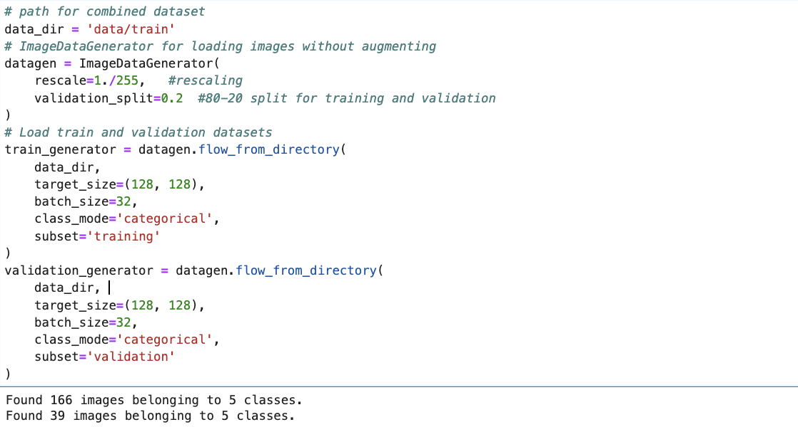Some of the sample images collected are:
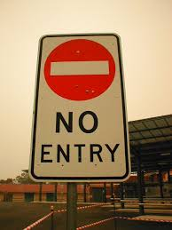 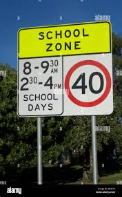Development of CNN:
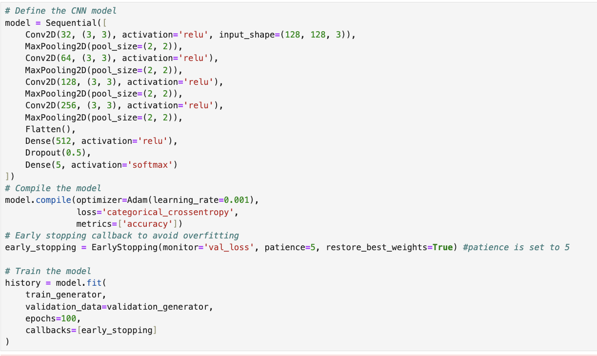The results of training and validation can be analysed by plotting the accuracy and loss at each epoch.
The model has been trained with a small dataset of about 200 images and validated. The training accuracy is about 87 and the validation accuracy is just 56% which tells that the model is not good at predicting unseen data. The validation loss is also high when compared with the training loss.
Image augmentation
The below cell was executed only once since it generates and saves the augmented images in a directory. This has been done so that, the images need not be augmented every single time when needed.
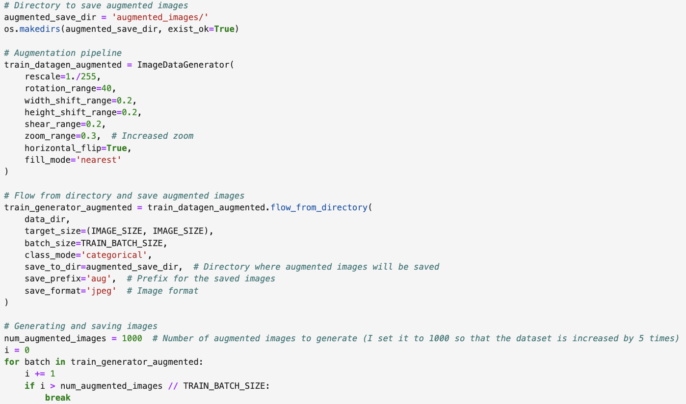Retrain the model with new extended dataset
The model's accuracy has been increased on a whole after using augmented images for training. The training accuracy has been increased to 94% and the validation accuracy is around 80% which is a significant improvement. The loss value has also been lowered which implies that the model has been improved.
The additional timing spent on training the model has improved the performance of the model significantly in terms of predicting more accurately. It's always better to expose more images to the model, so that we get a model which is more generalised.
Training under equal time:
Result comparison:
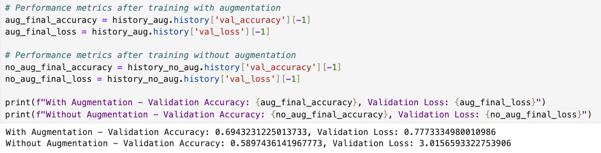After setting equal time for both the training, we could find that still the model trained with augmented dataset is performing better than the other model. In this run, the augmented model ran for 10 epochs and the other model ran for 49 epochs. The seconds can be altered, but in most of the cases the observed result holds.
The metrics training accuracy is more in case of non-augmented model which is equal to one implying over-fitting. The validation accuracy is low (58%) when compared with the augmented model (70%). Also the validation loss is 3.015 which is too high while compared with 0.777 suggesting that the non-augmented model performs poor even under similar training time in this scenario.
Analysis on misclassified images:
The classification report is printed to observe the precision, recall and other metrics of the model in predicting each class.
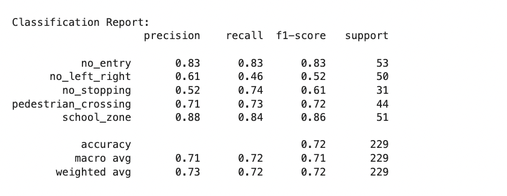To further analyse on where the model went wrong, the confusion matrix is plotted.
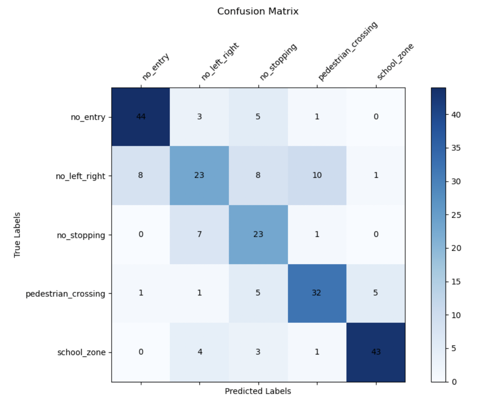Totally 64 images have been misclassified out of 229 images and the list of all the mis-classified images were printed out to see if there is some pattern (list can be seen in the notebook). Form the classification report printed above, we could observe that the model has done well in predicting the images of classes "no_entry" and "school_zone" . The mode has been confused between classifying images from the other classes
The above confusion matrix will be helpful in assessing where the model is being wrong.
- Some of the images from "no_left_right" are being classified as "pedestrian crossing". This might be due to the reason that the images in both the cases cover up a significant portion of roadway within them.
- There is also a confusion between "no_stopping" and "no_left_right". This might be due to the presence of more white color in their images.
The best way to improve the model's accuracy is to increase the training dataset with more images in all these classes. Also more specific pre-processing techniques should be introduced so that the predictions are more accurate.
Model Generalization:
The new test images taken are either from google maps real time view or photographs taken. No images were downloaded from the web source as it was done in previous cases making this a more realistic dataset.
Some of the new sample images collected are:
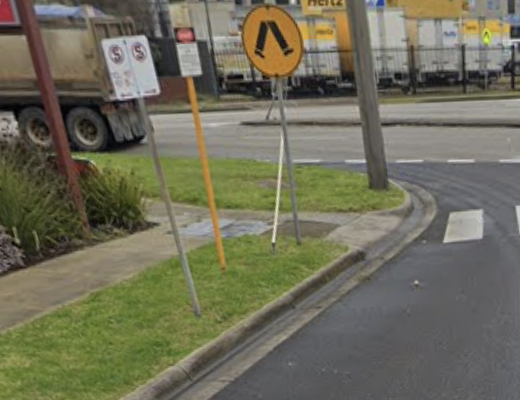 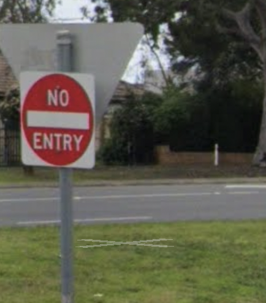 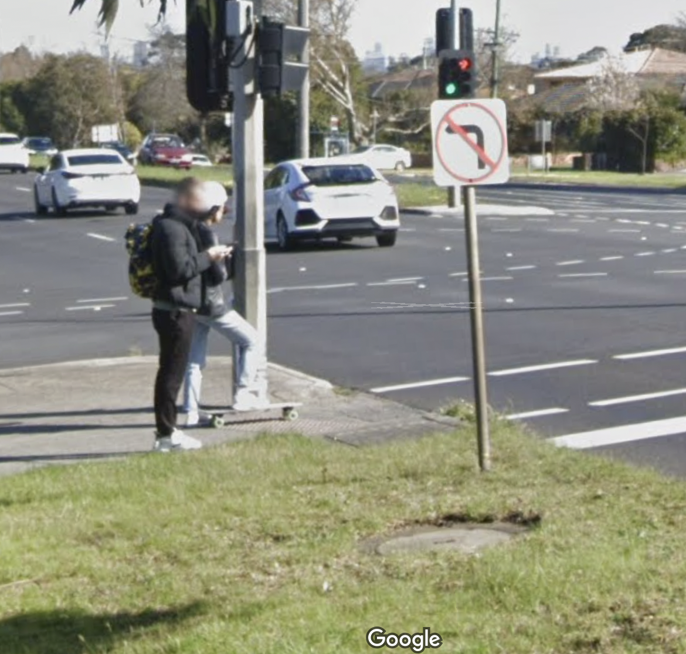 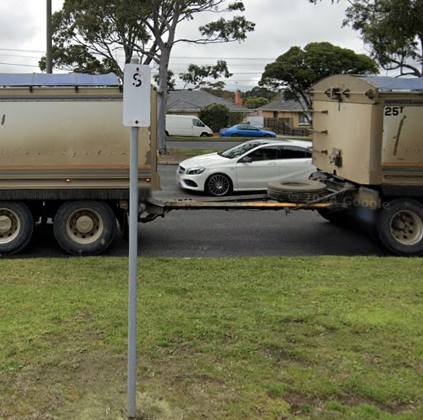 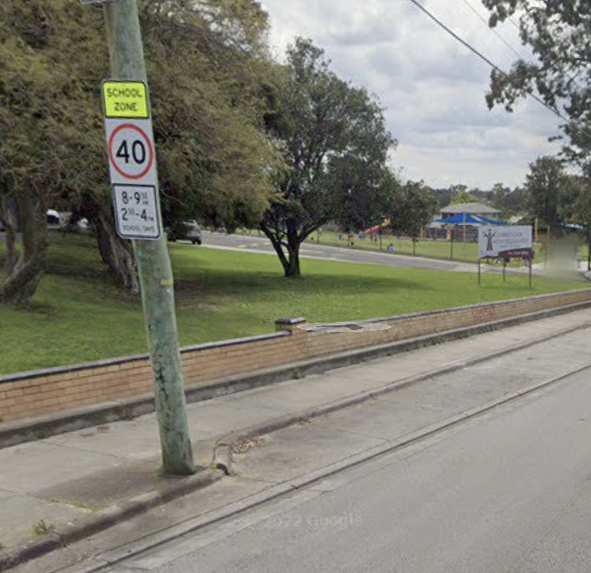The newly collected dataset comprising of real-time images of road signs were tested for prediction by the developed model. The results are shown below:
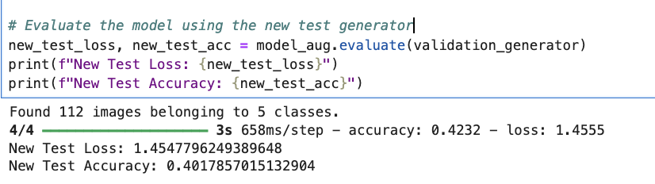The accuracy of the model on the new dataset is around 40% suggesting that the model is confused when it is exposed to new data. The model requires more improvements so that we can obtain a generalised model.
APPROACH 1
Use pre-trained model
In this approach we will be using a pre-trained classifier which has been exposed to large amount of images and it can be used as the base model on top of wich a few layers are added so that it can be customised for our cause.
MobileNetV2 model:
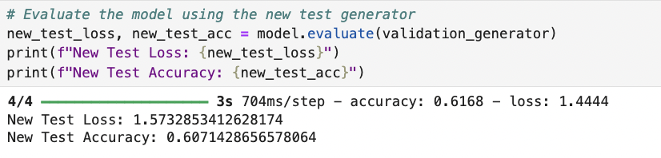The new test accuracy of the model has been increased from 40 to 60% by adopting a pre-trained model. This approach has been the most successful one while trying to make the model more generalised. The training time was almost the same as previous model training time.
APPROACH 2
Dropout layers and L2 regularization
The architecture of the model is made more complex by adding dropout layers with l2 regularization.
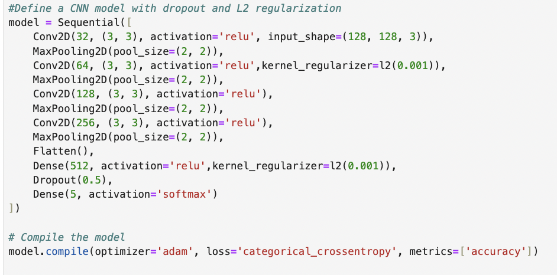The result of the new model is:
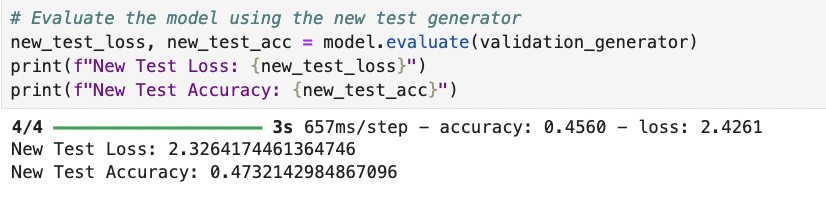After adding regularizers, the accuracy has been increased (47%), but there is no significant improvement in this approach too. However, applying l2 regularizer helps prevent overfitting of the model which makes the model more generalized.
APPROACH 3
ResNet
The below approach defines a ResNet-like architecture using a custom ResidualUnit class for building residual blocks, which helps in training deeper networks by mitigating the vanishing gradient problem. Each residual block consists of two convolutional layers followed by batch normalization and a skip connection that adds the input directly to the output of the block. The model begins with a convolutional layer and adds a series of residual units with increasing filters and strides to capture complex features. Finally, the output is processed through fully connected layers for classification into five classes, with the model compiled using the Adam optimizer and categorical cross-entropy loss.
The result of the new model is:
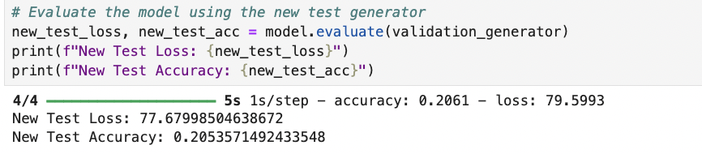Using this methodology, the training time was too hugh and the model has performed poorly.
CONCLUSION:
A deep analysis has been carried out in terms of classifying road signs of Victoria. The steps from data collection till model refinement has been demonstrated successfully. The recommended model is a pre-trained MobileNetV2 model. The learnings from this project is, more the data and more the computational resource, a better model can be built for road sign classification.